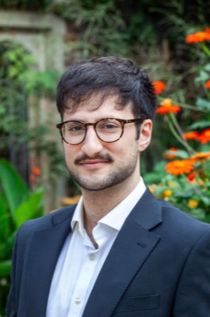
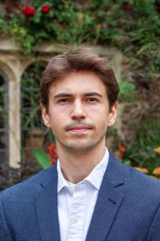
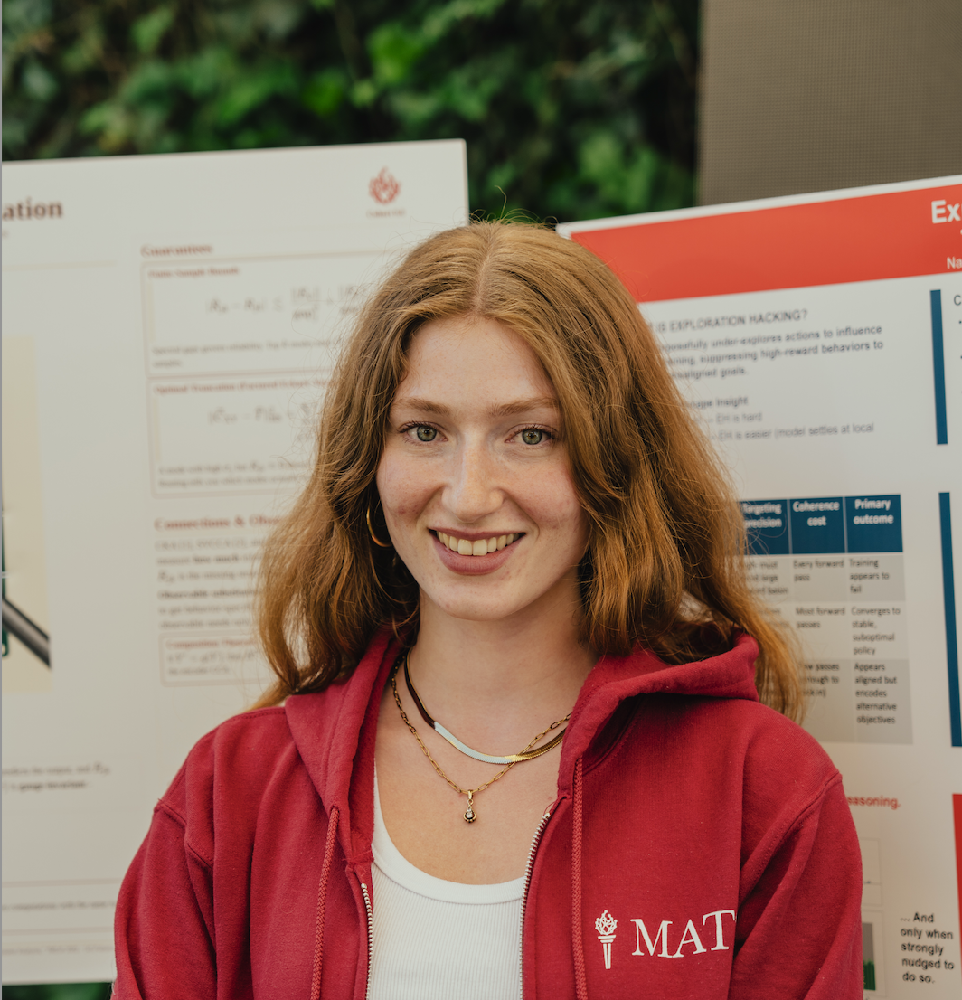
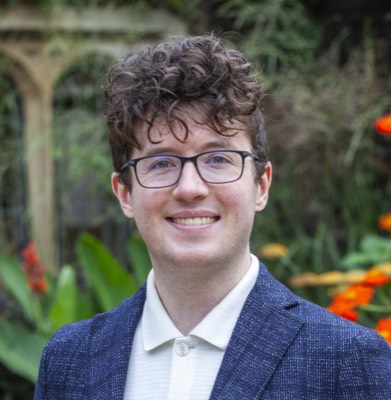

AI Safety Research · Cambridge, United Kingdom
Geodesic
Research
The shortest path to impact
About Us
We are building the science of alignment and control pretraining—determining whether safety can be an end-to-end strategy throughout model training.
Geodesic Research is a UK-based technical AI Safety organisation focused on compute-intensive alignment research. While there is an established science of pretraining's influence on capabilities, no such science exists for safety. We aim to change that.
Our purpose is two-fold: to explore scalable pretraining approaches we have reason to believe are not yet standard practice, and to facilitate adoption of any promising techniques we develop. We will consider Geodesic successful if we determine that pretraining has no obvious impact on safety—or if we determine that pretraining interventions are viable and facilitate their adoption across the industry.
Research Taste
Current Directions
Can alignment and control be
end-to-end strategies?
The Team
Founded in Cambridge, UK

PhD student in theoretical neuroscience at the University of Cambridge. Led Geodesic's early work on steganography. Previously a machine learning engineer at raft.ai and a private equity quantitative strategist at Goldman Sachs.

Marshall Scholar at the University of Cambridge, where he completed his MPhil on automated research with LLMs for computational psychiatry. Lead author of Noise Injection for Sandbagging Detection and a former Research Manager for the ERA: AI fellowship.
Cofounder of UK AI Forum. Previously, a Neuroscience researcher at UCL and the Head of Grants for a Biotech company where she secured and managed over $5M in private and government funding. Alexandra is applying her experience to scaling Geodesic.
Helped found and secure initial funding for Geodesic Research, and co-mentored Geodesic's initial MARS cohort. Previously a researcher in the UK AI Security Institute's Safeguards team. Completed a PhD in computational neuroscience at the University of Cambridge Engineering Department.

PhD student in computer science at Imperial College London and King's College London, researching mechanistic interpretability and robustness in LLMs. Previously a MATS Research Scholar, LASR fellow, and ERA:AI fellow.

Joined Geodesic through the ERA fellowship. Leads the alignment pretraining research agenda and has developed strong relationships with UK AI Security Institute through previous research on Deep Ignorance. Previously at EleutherAI and Microsoft.
Join Us
Help build the future
of AI safety
We don't have any open positions at the moment… but we're always interested in connecting with talented people who share our mission. If you'd like to be considered for future opportunities, please reach out to cam@geodesicresearch.org with your CV and a note about what draws you to our work.